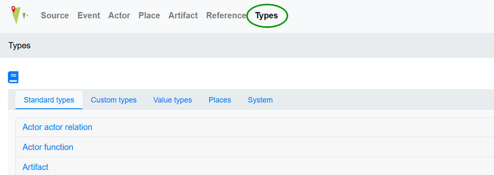
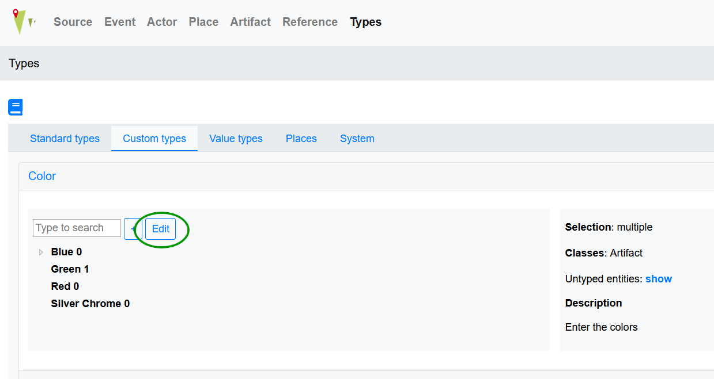
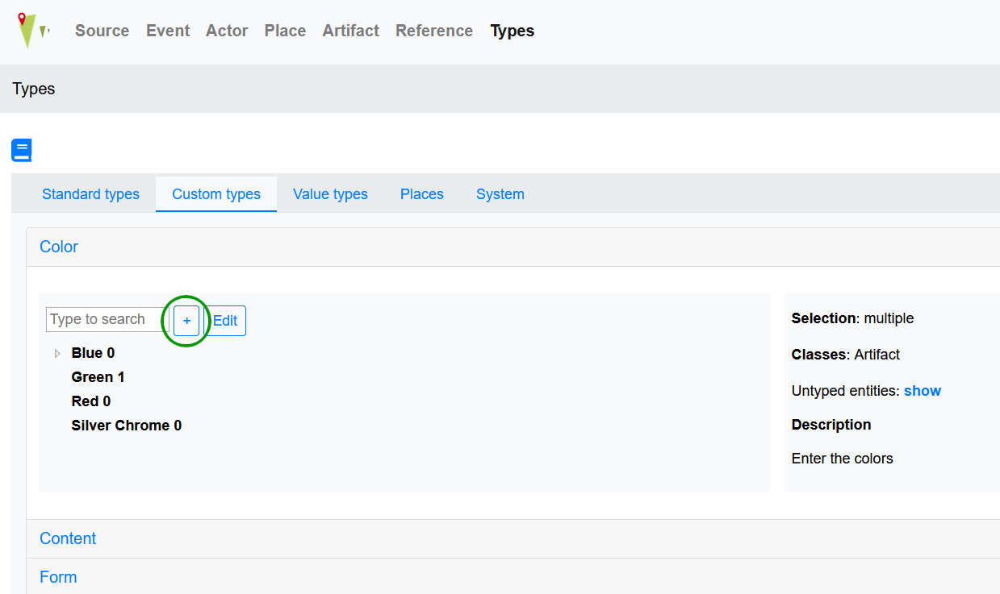

Types¶
Types are used to add information to all entities. They are organized hierarchically into trees and specific for each project. There are different kind of types: A distinction is made between different groups of types:
Standard types
Custom types
Value types
Different user groups have different permissions regarding the creation and modification of types. Further information can be found in the manual entry regarding Type. Please note that possibility to add and edit types depends on the user group, see User.
An overview of the types already created can be accessed by clicking Types menu item. Furthermore, new types can be created here if necessary.
{kind=link}
Create a new type tree¶
To create a new custom type or value type tree press the +Type button on the bottom of the page. Please fill out the form:
Choose a descriptive name for the new type
Decide if the type is single or multiple choice (only available for custom types)
Choose to which classes the new type will be added to e.g. Artifact or Place.
You can also enter text into the description field which will be displayed when you mouse-over the information button next to the type’s name in forms.
By pressing insert you can create a new type tree.
To edit an already existing type tree, go to the type you want to edit, click on its name and push the edit button next to the name.
{kind=link}
You can edit the type’s name, chosen classes and description. Please note that changing multiple to single choice is not possible.
Add a type to an existing type tree¶
To create a new type in an already existing standard, custom, or value type tree, find that type tree in the overview and click on it.
{kind=link}
You can then add the following information:
Choose a descriptive name
Choose a super if applicable, e.g. choose “Blue” as super when you are adding “Light blue” to the tree
You can add external references and dates as well as a description; the description will be displayed when you mouse-over the information button next to the type’s name in the data entry form
By pressing insert you can create a new type tree.
To edit an already existing type, click on that type. Find the edit button in the overview and change information after clicking that button.